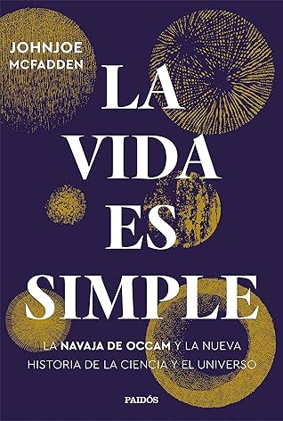

La vida es simple: La navaja de Occam y la nueva historia de la ciencia y el universo
Reseña por Jorge I. Zuluaga

Ver detalles · Ver reseña en GoodReads (necesita cuenta)
"La brevedad es el alma del ingenio", decía William Shakespeare cerca de 1500. Después de leer "La vida es simple", donde encontré esta ingeniosa y breve cita, podría decir que, si el Bardo hubiera vivido años después de la revolución científica de los 1600, tal vez habría escrito: "La brevedad es el alma del universo".
Más o menos de esa manera puedo resumir el sentimiento de descubrimiento y asombro que me dejó leer este libro.
Soy científico (físico y astrónomo); conozco desde las trincheras cómo funciona la ciencia —o eso creo—; he leído, tanto por afición como por ser parte de mi formación académica, las suficientes páginas de historia de la ciencia para afirmar que el sello de esta obra es, definitivamente, la originalidad, así como la identificación sin ambages del sello distintivo del pensamiento científico: la simplicidad.
No dudo, por lo tanto, en recomendar "La vida es simple" a todas aquellas personas que, como yo, hacen ciencia o tienen que ver con ella. Naturalmente, la invitación es extensiva a todas las personas que, aun sin ser científicas, aman también la ciencia.
Conocía muy poco sobre la vida y la obra de Guillermo de Ockham (1285-1347). Peor aún, no sabía casi nada sobre el impacto que esa obra produjo en la revolución científica que se desarrolló en los siglos sucesivos. Tampoco estaba al tanto del impacto que tuvo en distintos ámbitos del intelecto humano, la filosofía en general, la teología y hasta el derecho. Esto es justamente lo primero que descubrirán en "La vida es simple". En alrededor de sus 350 páginas, conocerán detalles sobre la increíble historia personal de Ockham y sus revolucionarias ideas, algunas de las cuales pusieron en jaque el "dogma" aristotélico y platónico que dominó el pensamiento occidental por cerca de 1000 años.
El libro tiene de todo. Desde las aventuras de Ockham huyendo de la persecución de la Iglesia católica por sus ideas "heréticas", pasando por una revisión rápida a los principios de la teología tardomedieval, breves historias sobre el origen de la física, la biología y la física moderna, hasta llegar a algunos temas de las ciencias de frontera: el multiverso, la teoría de cuerdas o la síntesis moderna de la evolución darwiniana. Hay páginas para todos los gustos.
Ya había tenido la oportunidad de leer otro libro de McFadden, "Biología al límite" (mi reseña por aquí). Como sucedió en aquel, en "La vida es simple" he encontrado ingeniosas y bien pensadas analogías para explicar conceptos complejos de los temas de los que habla. Para ilustrar lo que digo, su ejemplo de cómo funciona la probabilidad bayesiana me pareció excelente y muy ilustrativo. Demuestra de forma simple la manera como en la ciencia nos inclinamos por los dados con pocas caras (los modelos más simples); y lo hacemos tanto por razones ockhamistas como por razones bayesianas.
Aprendí a través del libro cosas sobre la historia de la física que no había leído en ningún otro volumen. La idea, por ejemplo, de que en la obra de Ockham estuvieran las semillas de la teoría de la relatividad —que demuestra a través de una cita específica de uno de los escritos del teólogo inglés y que, me atrevería a decir, casi todas las personas en el gremio consideramos que viene de Galileo Galilei— me pareció asombrosa. El hecho de que los principios básicos de la cinemática habían sido formulados matemáticamente con mucha mayor anterioridad al trabajo de Galileo —quien, como señala McFadden, nunca los citó— fue también una novedad para mí. El papel central de Robert Boyle en la revolución de la física de los 1600, a quien consideraré, después de leer "La vida es simple", como el Galileo de la física de la materia (McFadden lo llama, con justicia, el segundo padre de la ciencia experimental), fue muy iluminador. Y así, un sinnúmero de datos e ideas que me resultaron bastante novedosas si no desde el punto de vista académico —no soy historiador de las ciencias y puede que estos datos sean muy conocidos para ellos—, al menos sí desde el punto de vista de la cultura histórica general de los profesionales rasos.
Pero, naturalmente, las mejores lecciones que se obtienen leyendo "La vida es simple" son lecciones de filosofía de la ciencia. ¡Y qué buenas lecciones! Algunas de esas lecciones se pueden resumir en unas pocas citas del autor o de otros que cita: "La prueba más convincente de una teoría es su capacidad de absorber y dar cabida a hechos nuevos" (Alfred Russel Wallace); "Las cosas reales deben producir un efecto en el mundo; ese debería ser nuestro criterio mínimo para definir lo real"; "Las matemáticas reducen la razón al conjunto de reglas más sencillo posible y hace que las ciencias pasen de ser otro juego más a ser un lenguaje universal"; "No es que la sencillez se haya incorporado a la ciencia moderna; la sencillez es la ciencia moderna"; "Puede que la ciencia ni sepa a dónde se dirige, pero el viaje no deja de ser asombroso"; "El universo utiliza una causa para muchos efectos"; "Los modelos sencillos son frágiles en el sentido de que pueden ser invalidados con datos que los desmienten". Y así.
El libro está bien escrito, es bastante ameno a pesar de que algunos temas son bastante profundos y abstractos, y no le falta un poco de humor e irreverencia. Estos elementos van haciendo de McFadden uno de mis autores de divulgación científica preferidos (ya estoy buscando otros libros suyos).
Si todo me pareció tan excelente, ¿por qué entonces no le pongo cinco estrellas al libro?
La primera razón tiene que ver con el número de pequeños errores que encontré a través de sus páginas, por lo menos en la edición que tuve la oportunidad de leer (Paidós, 2022). No son simples errores tipográficos; son errores relativamente difíciles de detectar en una leída superficial, pero que serán evidentes para todas las personas que lo lean con algún cuidado. Ustedes lo notarán sin dificultad.
La segunda razón, y la más importante o la más grave, tiene que ver con los errores conceptuales que encontré en algunos apartes del libro. Por supuesto, no puedo señalar los errores en todas las disciplinas que abarca el texto, pero sí en las que tienen que ver con mi especialidad, física y astronomía. Hay afirmaciones abiertamente incorrectas y que se nota no fueron rectificadas por algunos de los expertos en física que el autor menciona en los agradecimientos. Lamentablemente, esto no ayuda a darle credibilidad a otras partes del escrito y deja una sombra de duda sobre algunas de las conclusiones y afirmaciones más asombrosas que encontré en otras partes. Creo que haría falta un grupo de personas con especialidades en distintas disciplinas (filosofía, teología, historiografía, biología, química, etc.) para hacer un profundo fact-checking del libro.
Ahora bien, ¿tienen que ser los libros de divulgación científica absolutamente precisos? No necesariamente; estoy convencido de que la divulgación científica es una forma de invitarnos a las personas que no somos expertas en una disciplina —en este caso, historia y filosofía de las ciencias— para que nos acerquemos a libros más profundos. Las obras de divulgación no deberían usarse como referencias académicas o científicas. Aun así, tampoco deberían tener imprecisiones rampantes, y esto es lo que me hace reducir la calificación del libro.